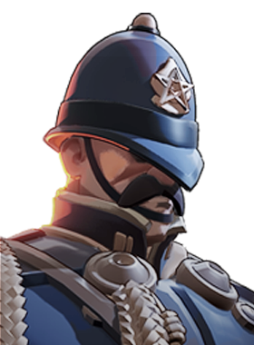

Bruxa idosa que lança maldições nos adversários.
História
Existem algumas coisas que a maioria dos habitantes de The Cursed Apple espera experimentar em algum momento de suas vidas.
Veja um show da Broadway.
Patinação no Gelo no Rockefeller Center durante a época de Natal.
Receba gritos da Lady Pigeon do Central Park.
Porque Baba é mais do que apenas uma velha que alimenta pombos espirituais no parque... ela é uma instituição. Uma força da natureza entrelaçada na tradição da cidade de Nova York. É verdade que ela se sentou no mesmo banco todos os dias durante os últimos 50 anos, faça chuva ou faça sol? Talvez. Ela é REALMENTE a líder do The Soho Coven? Quem pode dizer. Uma coisa é certa... ela é nova-iorquina. E ela não vai ficar sentada assistindo um bando de turistas destruir Manhattan em busca de poder.
História oficial do jogo, traduzida automaticamente para o português.
Números reais
Habilidades

Lança um fio que segue sua mira e explode ao longo do caminho, causando dano espiritual e roubando Espírito do inimigo.

Estica as pernas do banco, dando velocidade, saltos maiores e resistência a debuffs e a corpo a corpo, com um chute e um golpe no chão.

Joga um bule de chá que cria uma área alternando entre barreira, Silêncio ou queimadura que causa dano espiritual contínuo.

Cobre os alvos de pão, acumulando lentidão; então pombos os bombardeiam com dano espiritual e transformam cada alvo em pombo.
Builds mais usadas
9.089 partidas registradas com esta build.
Regeneração Extra (800) · Taxa Extra (800) · Regeneração Mística (800) · Golpe Espiritual (800) · Regeneração Radiante (3.200) · Impulsionador de cura (1.600) · Healbane (1.600) · Barreira Reativa (1.600) · Medalhão Restaurador (1.600) · Roubo de Vida Espiritual (1.600)
4.055 partidas registradas com esta build.
Taxa Extra (800) · Regeneração Mística (800) · Regeneração Radiante (3.200) · Golpe Espiritual (800) · Regeneração Extra (800) · Impulsionador de cura (1.600) · Pulso de Tormento (3.200) · Resiliência à bala (3.200) · Barreira Reativa (1.600) · Revista Titânico (1.600)
3.521 partidas registradas com esta build.
Taxa Extra (800) · Regeneração Extra (800) · Regeneração Mística (800) · Regeneração Radiante (3.200) · Golpe Espiritual (800) · Impulsionador de cura (1.600) · Pulso de Tormento (3.200) · Medalhão Restaurador (1.600) · Barreira Reativa (1.600) · Resfriamento da compressão (1.600)
Confrontos reais
 Deadman Danny — 64.7% de vitória
Deadman Danny — 64.7% de vitória Solomon — 62.2% de vitória
Solomon — 62.2% de vitória Mirage — 58.2% de vitória
Mirage — 58.2% de vitória Shiv — 57.7% de vitória
Shiv — 57.7% de vitória
Warden — 57.3% de vitória Pocket — 57.3% de vitória
Pocket — 57.3% de vitória
 Rat King — 45.4% de vitória
Rat King — 45.4% de vitória Paige — 45.4% de vitória
Paige — 45.4% de vitória Haze — 46.2% de vitória
Haze — 46.2% de vitória Seven — 46.7% de vitória
Seven — 46.7% de vitória Graves — 47.7% de vitória
Graves — 47.7% de vitória Ivy — 48.4% de vitória
Ivy — 48.4% de vitória
O que upar primeiro
Nível por nível, na ordem que os jogadores mais usam em partidas de verdade. A porcentagem mostra quantos escolheram aquela habilidade naquele nível.
Melhores duplas
Heróis que mais ganham jogando junto com ele, em partidas reais (pelo menos 1.500 partidas juntos).
- Paige61,0%
- Graves59,9%
- Seven58,5%
 Kelvin58,2%
Kelvin58,2%- Rat King58,0%
- Pocket45,4%
- Shiv45,7%
- Deadman Danny46,0%
Rota (lane)
Na rota, cada lado joga em dupla. Estes números são de confrontos reais: a diferença de almas é medida com o jogo já começado, então almas no verde significa que ele costuma estar na frente.
- Haze — 42,8% de vitória −1.778 almas (1.629 partidas)
 Dynamo — 44,8% de vitória −37 almas (411 partidas)
Dynamo — 44,8% de vitória −37 almas (411 partidas)- Rat King — 45,3% de vitória −1.070 almas (3.781 partidas)
- Paige — 46,2% de vitória +68 almas (1.328 partidas)
- Graves — 46,7% de vitória +817 almas (377 partidas)
 Wraith — 51,3% de vitória −884 almas (489 partidas)
Wraith — 51,3% de vitória −884 almas (489 partidas)- Seven — 51,4% de vitória −458 almas (292 partidas)
 Lash — 52,7% de vitória −382 almas (427 partidas)
Lash — 52,7% de vitória −382 almas (427 partidas)
 Bebop — 61,5% de vitória −174 almas (576 partidas)
Bebop — 61,5% de vitória −174 almas (576 partidas)- Solomon — 61,1% de vitória +590 almas (1.517 partidas)
 Abrams — 60,9% de vitória +198 almas (384 partidas)
Abrams — 60,9% de vitória +198 almas (384 partidas)